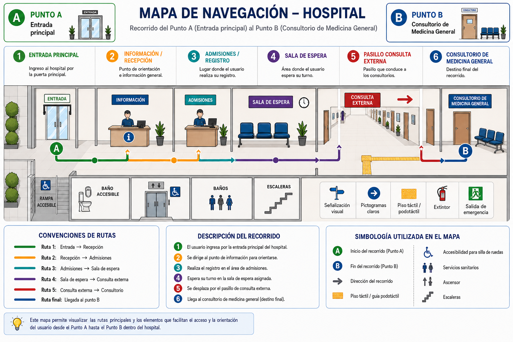
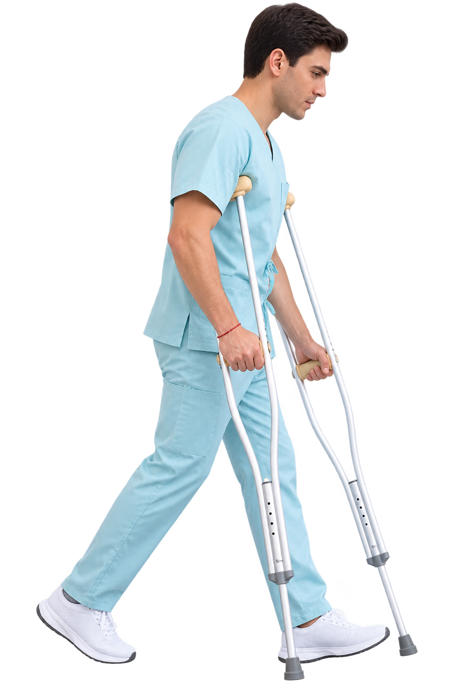
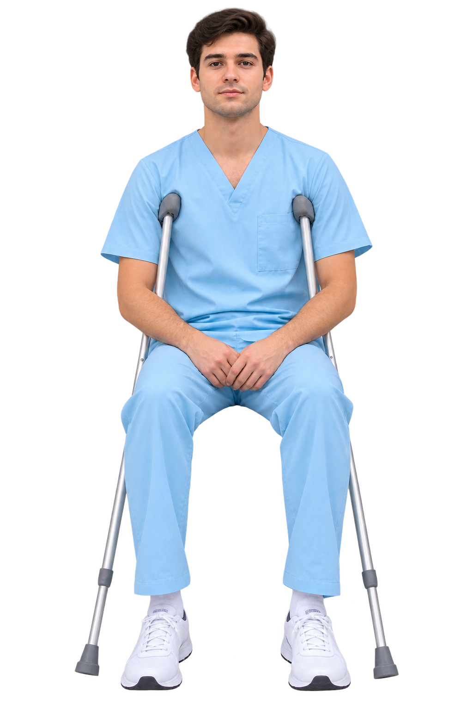
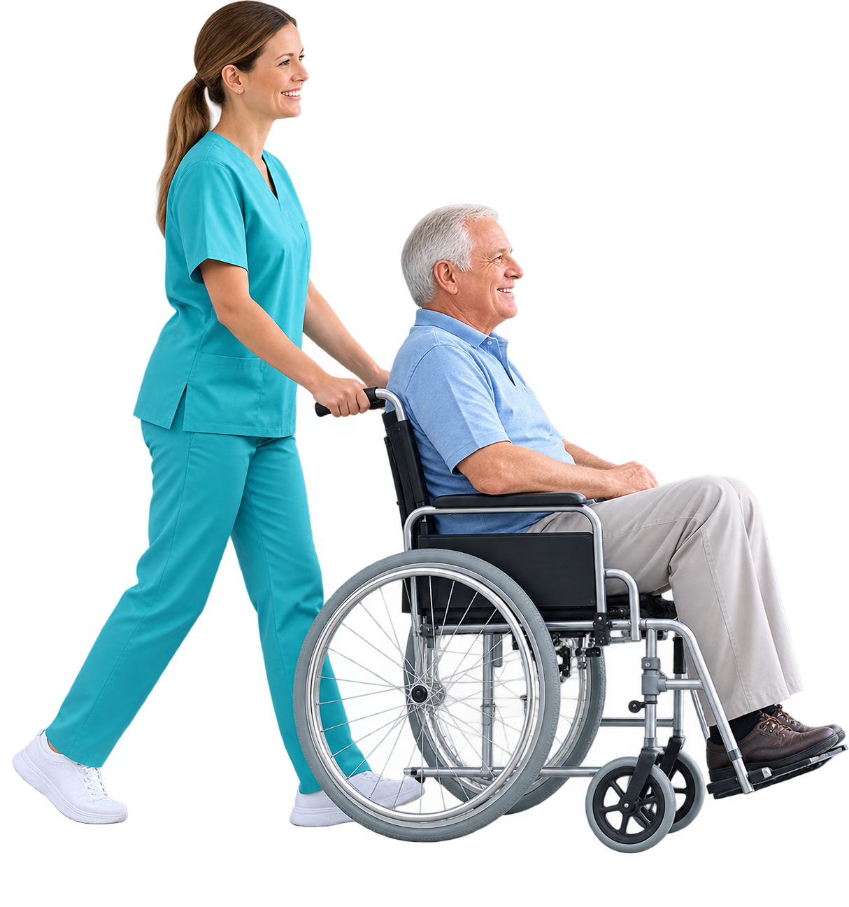

♿ Rampa accesible
Facilita el ingreso y desplazamiento de usuarios en silla de ruedas.
Prueba de usabilidad y accesibilidad




Pasa el mouse por Entrada, Información, Admisiones, Sala de espera, Consulta externa o Medicina General para observar el recorrido.
El hospital dispone de diferentes elementos destinados a facilitar el desplazamiento, orientación y acceso de los usuarios.
Facilita el ingreso y desplazamiento de usuarios en silla de ruedas.
Proporciona un espacio adecuado para personas con movilidad reducida.
Facilita el desplazamiento entre diferentes niveles del hospital.
Facilita la orientación de personas con discapacidad visual.